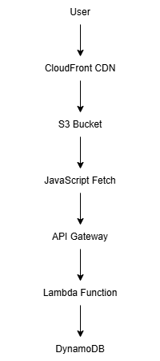

AWS Lambda • DynamoDB • API Gateway • CloudFront • S3
A serverless web application that tracks and displays website visitor counts in real time using AWS managed services and event-driven architecture.
The AWS Serverless Visitor Counter was developed to demonstrate practical implementation of cloud-native serverless architecture on AWS. The application automatically records and displays website visitor counts without requiring traditional backend servers.
The solution leverages AWS managed services to process visitor requests and update counts dynamically. Each website visit triggers backend processing that updates visitor statistics while maintaining low operational overhead.
The visitor counter was integrated directly into the personal portfolio website, providing a real-world implementation of frontend and cloud service integration.

The application follows a fully serverless architecture where website traffic is delivered through CloudFront, requests are processed using API Gateway and AWS Lambda, and visitor statistics are stored in DynamoDB. This approach eliminates server management while providing automatic scalability, high availability, and cost-efficient operation.
Displays website visitor counts in real time directly on the portfolio website using serverless backend services.
Built entirely using AWS managed services without requiring dedicated servers or infrastructure maintenance.
The application automatically scales based on visitor traffic while maintaining performance and reliability.
Integrating the portfolio frontend with API Gateway required proper request handling and communication between browser-based applications and cloud services.
IAM permissions were configured to ensure Lambda functions could securely access DynamoDB while maintaining AWS security best practices.
This project provided hands-on experience with AWS Lambda, API Gateway, DynamoDB, CloudFront, IAM, and serverless application design. It strengthened understanding of event-driven architecture, cloud security, and frontend-to-cloud integrations.